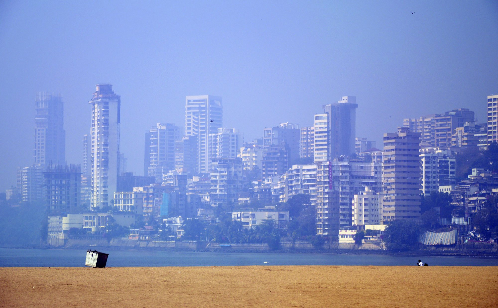

Exploring the Benefits of Outdoor Workouts: Nature's Gym
Uncover the advantages of outdoor workouts, how nature can enhance your fitness routine, and effective exercises to get you moving outside. The Appeal of Outdoor Workouts
There is something inherently invigorating about exercising outside. The fresh air, natural light, and changing environments stimulate the senses and promote a sense of well-being. Here are some key benefits of taking your workouts outdoors:
1. Connection to Nature
Spending time outdoors allows you to connect with nature, which has been shown to reduce stress and improve mood. The sights and sounds of the natural world can provide a sense of tranquility that is often missing in a crowded gym. Being surrounded by greenery, fresh air, and natural light can invigorate your workouts, making them more enjoyable and fulfilling.
2. Enhanced Mental Health
Research indicates that outdoor exercise can have significant mental health benefits. Physical activity stimulates the release of endorphins, often referred to as “feel-good” hormones, which can enhance mood and reduce feelings of anxiety and depression. Additionally, exercising in nature has been linked to improved cognitive function, increased creativity, and better focus.
3. Increased Motivation
Outdoor workouts can be more motivating than indoor routines. The dynamic environment, including changing terrains and beautiful landscapes, can inspire you to push your limits. Whether it’s the challenge of running up a hill or the excitement of discovering a new trail, outdoor exercise can reignite your passion for fitness.
4. Versatility and Variety
Outdoor workouts offer a wealth of options for variety. From hiking and biking to bodyweight exercises and team sports, the possibilities are endless. This variety not only keeps your routine fresh but also allows you to engage different muscle groups and improve overall fitness. Trying new activities outdoors can also foster a sense of adventure and exploration.
5. Improved Physical Fitness
Working out in different environments can challenge your body in new ways. Uneven terrain, inclines, and varying weather conditions can enhance your strength, balance, and endurance. Outdoor workouts often require greater engagement of stabilizing muscles, contributing to a more comprehensive fitness routine.
Getting Started with Outdoor Workouts
Transitioning to outdoor workouts can be seamless and rewarding. Here are some practical tips to help you get started:
1. Choose the Right Location
Finding a suitable outdoor space for your workouts is essential. Parks, nature reserves, beaches, and trails are excellent options. Look for locations that offer a variety of terrains and scenery to keep your workouts interesting. Consider the accessibility and safety of the area, ensuring it aligns with your fitness goals.
2. Dress Appropriately
Dressing for outdoor workouts requires attention to the weather and terrain. Wear moisture-wicking fabrics to keep you comfortable and layers that can adapt to changing temperatures. Invest in a good pair of outdoor shoes that provide adequate support and grip, especially if you plan to tackle trails or uneven surfaces.
3. Plan Your Routine
Having a workout plan can help you make the most of your outdoor sessions. Consider incorporating a mix of cardiovascular exercises, strength training, and flexibility work. This could include activities like running or cycling, followed by bodyweight exercises like push-ups, squats, or lunges. Don’t forget to include warm-ups and cool-downs to prevent injury.
Effective Outdoor Workouts
Here are some engaging exercises and activities you can try during your outdoor workouts:
1. Trail Running or Jogging
Trail running combines the benefits of running with the added challenge of uneven terrain. It engages different muscles and enhances balance while providing a scenic backdrop. Start with shorter distances to get accustomed to the terrain, and gradually increase your mileage as you build strength and confidence.
2. Hiking
Hiking is an excellent way to explore nature while getting a fantastic workout. It combines cardiovascular exercise with strength training, especially when tackling inclines or rocky paths. Choose trails that match your fitness level and enjoy the sights and sounds of nature along the way.
3. Bodyweight Workouts
Utilizing your body weight for strength training is effective and versatile outdoors. Find a flat surface, such as a park bench or grassy area, to perform exercises like push-ups, squats, lunges, and planks. You can also use outdoor structures, like playground equipment, to add variety to your routine.
4. Group Fitness Classes
Many communities offer outdoor fitness classes, such as yoga, boot camps, or aerobics. These classes provide structure and social interaction, making workouts more enjoyable. Check local listings or community centers for outdoor fitness opportunities.
5. Cycling
Cycling is a great outdoor cardio option that allows you to cover more ground while enjoying beautiful scenery. Whether you choose road biking or mountain biking, cycling is an effective way to enhance cardiovascular fitness and strengthen leg muscles.
6. Dance Workouts
Bring your love of dance outside! Whether it’s a solo dance party in the park or joining a group class, dancing outdoors can be a joyful way to get your heart pumping. The open air and natural light can enhance the experience, making it even more enjoyable.
Safety Considerations
While outdoor workouts can be exhilarating, it's important to prioritize safety:
- Stay Hydrated: Ensure you drink plenty of water before, during, and after your workouts, especially on hot days.
- Use Sun Protection: Apply sunscreen and wear a hat to protect yourself from the sun's rays.
- Be Aware of Your Surroundings: Stay alert to your environment, especially in areas with wildlife or uneven terrain.
- Workout with a Buddy: If possible, exercise with a friend or in a group for added safety and motivation.
Conclusion
Outdoor workouts offer a unique and enriching approach to fitness that connects you with nature while enhancing your physical and mental well-being. By embracing the outdoors, you can boost your motivation, improve your overall fitness, and enjoy the beauty of your surroundings. Whether you choose to run, hike, cycle, or participate in group classes, make the most of your time outside. As you explore nature's gym, remember to have fun, stay safe, and appreciate the many benefits that outdoor exercise brings to your life.